Понятный каталог
Краткие описания помогут познакомиться с разными видами растений.
Больше зелени — больше уюта
GreenLeaf — ваш небольшой путеводитель по миру комнатных растений. Выбирайте зелёных друзей и узнавайте, как заботиться о них с удовольствием.
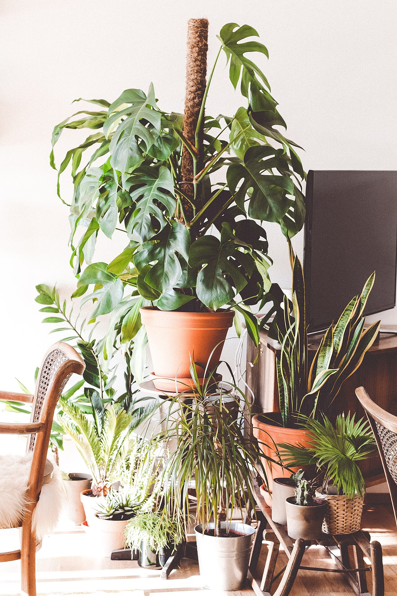
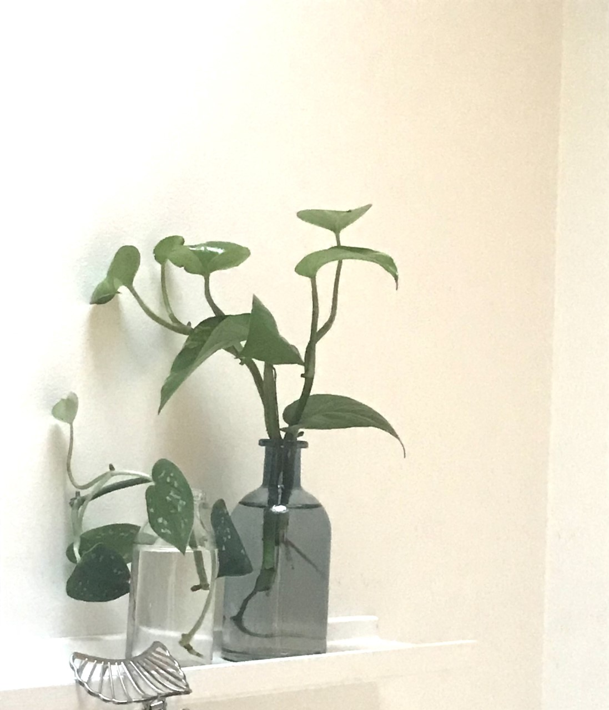
О проекте
GreenLeaf создан для тех, кто хочет добавить в дом немного природы. Здесь можно познакомиться с популярными комнатными растениями, узнать об их особенностях и разобраться в базовых правилах ухода.
Неважно, выращиваете ли вы растения давно или только выбираете первое: начните с простых рекомендаций и найдите вариант, который подойдёт вашему пространству.
Краткие описания помогут познакомиться с разными видами растений.
Основы полива, освещения и пересадки — простым языком.
Идеи и подсказки как для новичков, так и для любителей растений.
Каталог
Несколько популярных вариантов, с которых можно начать свою домашнюю коллекцию.
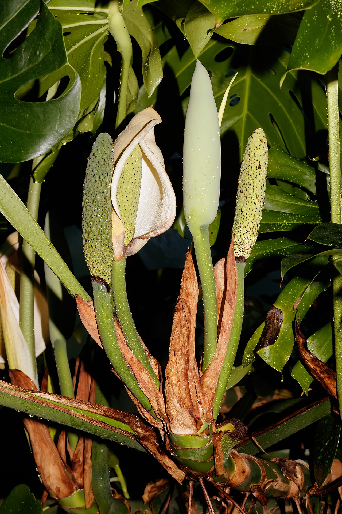
Эффектное растение с крупными резными листьями. Любит яркий рассеянный свет и умеренный полив.
Как ухаживать →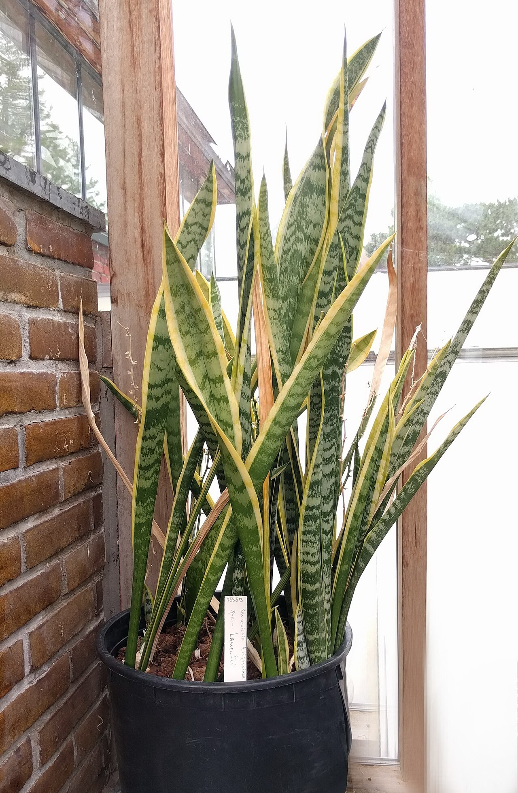
Растение с выразительными вертикальными листьями, которое переносит нерегулярный полив.
Как ухаживать →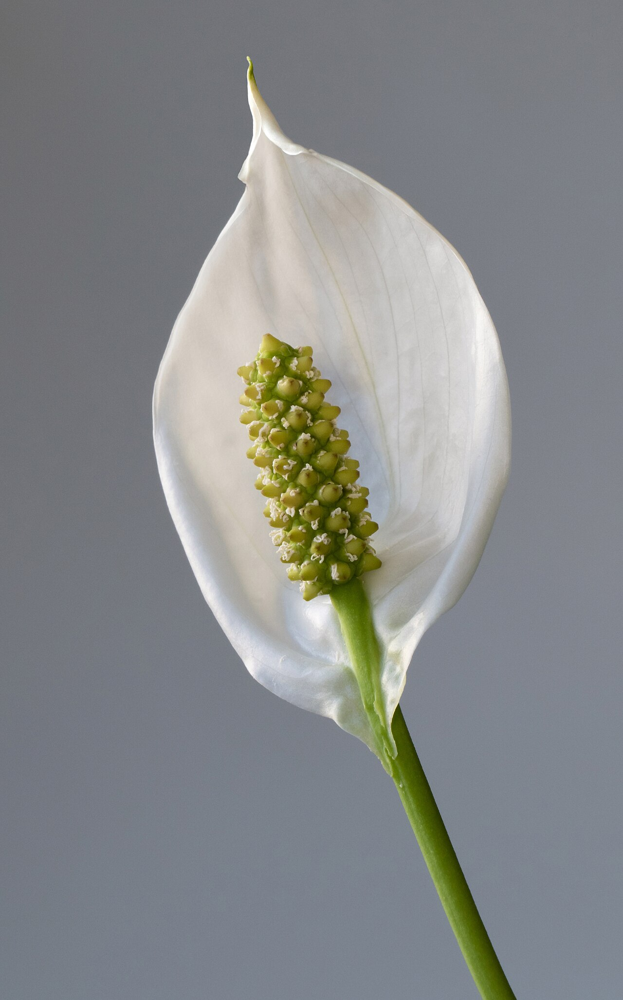
Растение с красивыми листьями и белыми цветками. Предпочитает рассеянный свет и умеренно влажную почву.
Как ухаживать →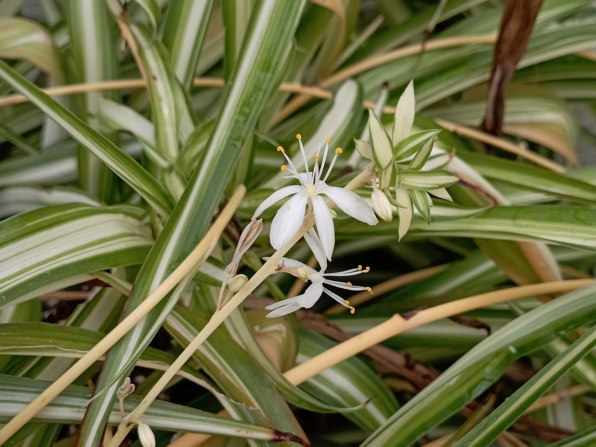
Неприхотливое растение с изящными узкими листьями, хорошо подходящее для домашней коллекции.
Как ухаживать →Забота о зелёных друзьях
У каждого вида свои потребности, но эти правила помогут выстроить хороший базовый уход.
Проверяйте влажность почвы перед поливом. Не оставляйте воду надолго в поддоне и учитывайте потребности конкретного растения.
Изучите требования растения к свету. Многие комнатные виды хорошо чувствуют себя при ярком рассеянном освещении без палящего солнца.
Выбирайте горшок с дренажными отверстиями и подходящий грунт. Пересаживайте растение, когда ему становится тесно в прежнем горшке.
Выбор сообщества
Небольшая подборка для вдохновения при оформлении домашнего зелёного уголка.
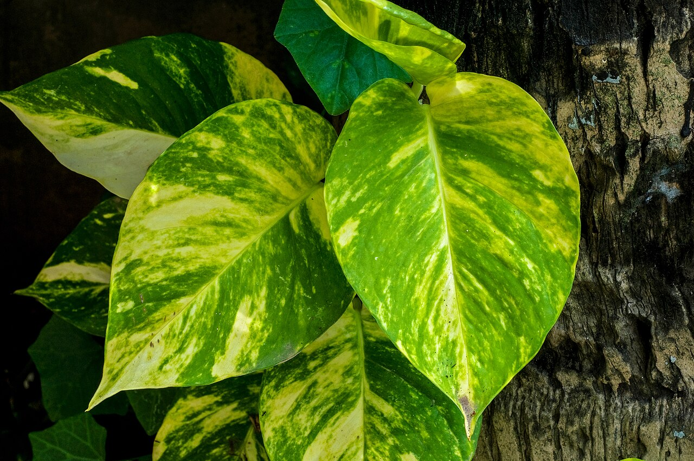
Вьющееся растение, подходящее для полок и подвесных кашпо.
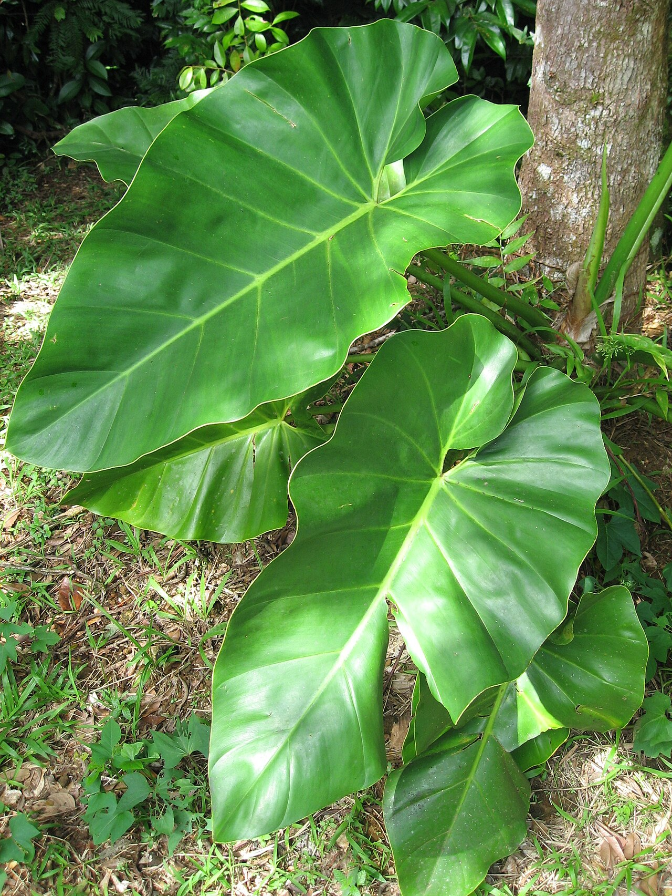
Разнообразная группа растений с выразительной листвой.
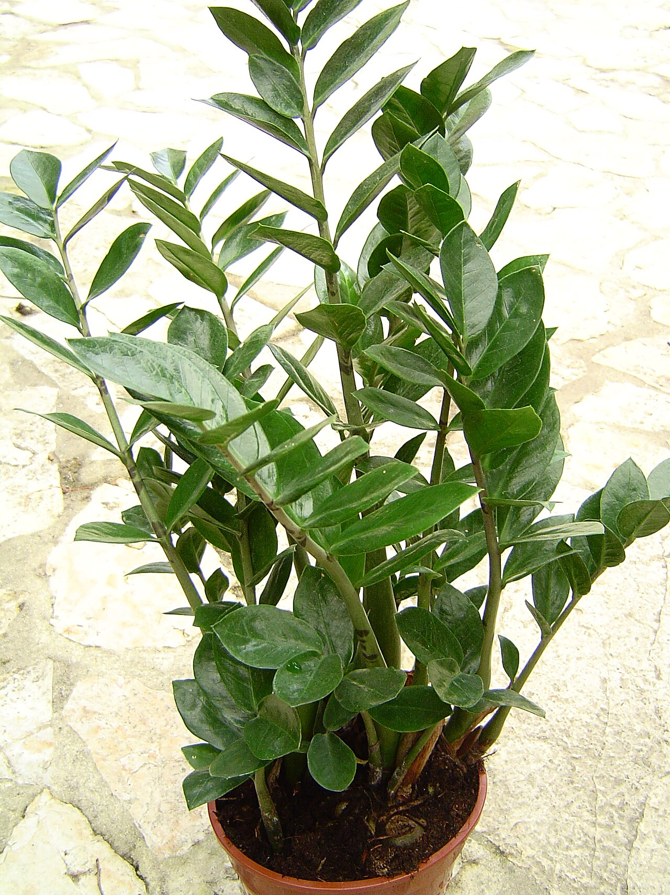
Растение с глянцевыми листьями, предпочитающее умеренный полив.
Фотогалерея
Три новые фотографии из рабочей папки проекта, добавленные с помощью AI-агента.
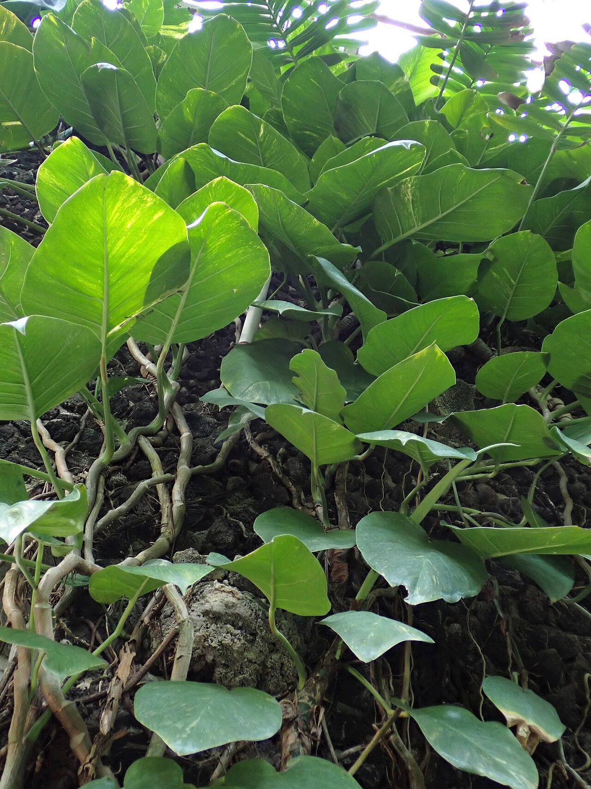
Быстрорастущая лиана, которая красиво смотрится на полке или в подвесном кашпо.
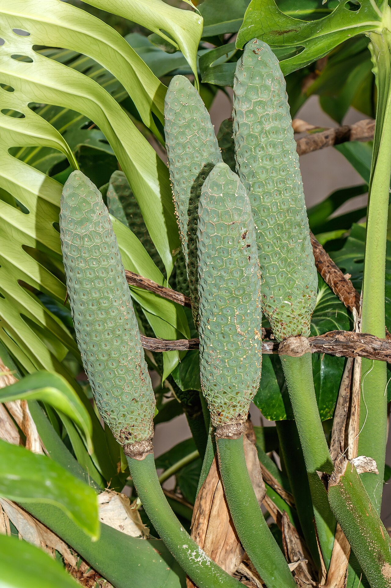
Акцентное растение для светлой комнаты: любит опору, рассеянный свет и умеренный полив.
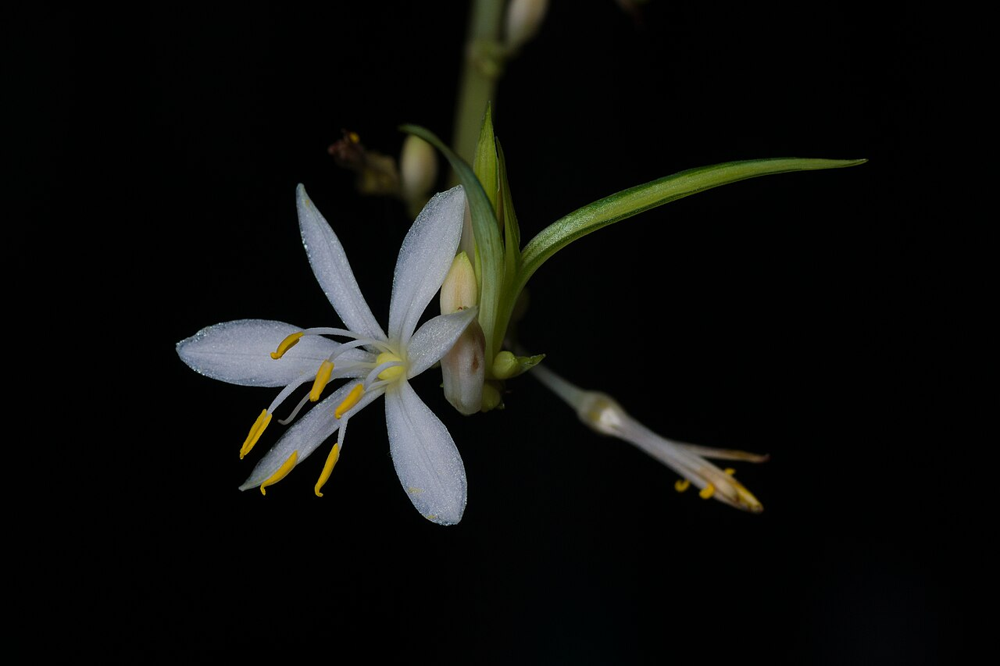
Неприхотливый вариант для начинающих: переносит редкий полив и быстро разрастается.
Будем на связи
Хотите предложить тему для следующего материала или поделиться идеей? Используйте контактные данные проекта или заполните демонстрационную форму.